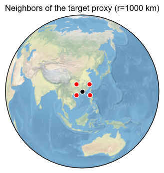
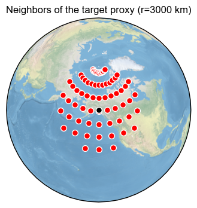
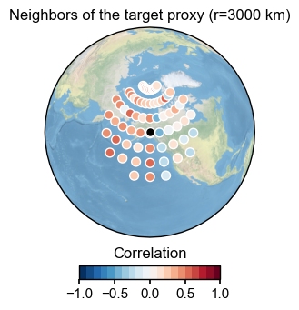

Visualization of a graph
Data preparation
[1]:
%load_ext autoreload
%autoreload 2
import GraphEM
import pyleoclim as pyleo
[2]:
job = GraphEM.ReconJob()
[3]:
job.load_configs('./testcases/PPE_PAGES2k/configs.yml', verbose=True)
GraphEM: job.load_configs() >>> loading reconstruction configurations from: ./testcases/PPE_PAGES2k/configs.yml
GraphEM: job.load_configs() >>> job.configs created
GraphEM: job.load_configs() >>> job.configs["job_dirpath"] = /Users/fzhu/Github/GraphEM/docsrc/tutorial/testcases/PPE_PAGES2k/recon
GraphEM: job.load_configs() >>> /Users/fzhu/Github/GraphEM/docsrc/tutorial/testcases/PPE_PAGES2k/recon created
{'anom_period': [1951, 1980],
'calib_period': [1900, 2000],
'job_dirpath': '/Users/fzhu/Github/GraphEM/docsrc/tutorial/testcases/PPE_PAGES2k/recon',
'job_id': 'GraphEM_tutorial',
'obs_path': {'tas': './data/obs/iCESM_ann.nc'},
'obs_regrid_ntrunc': 21,
'obs_varname': {'lat': 'lat', 'lon': 'lon', 'tas': 'tas'},
'proxydb_path': './data/proxy/pseudoPAGES2k_dataset_tas_wn_SNR10_full_temporal_availability.pkl',
'ptype_list': 'all',
'recon_period': [1000, 2000]}
[6]:
job.load_proxydb(verbose=True)
GraphEM: job.load_proxydb() >>> job.configs["proxydb_path"] = /Users/fzhu/Github/GraphEM/docsrc/tutorial/testcases/PPE_PAGES2k/data/proxy/pseudoPAGES2k_dataset_tas_wn_SNR10_full_temporal_availability.pkl
GraphEM: job.load_proxydb() >>> 692 records loaded
GraphEM: job.load_proxydb() >>> job.proxydb created
[7]:
job.load_obs(verbose=True)
job.regrid_obs(verbose=True)
GraphEM: job.load_obs() >>> loading instrumental observation fields from: {'tas': '/Users/fzhu/Github/GraphEM/docsrc/tutorial/testcases/PPE_PAGES2k/data/obs/iCESM_ann.nc'}
GraphEM: job.load_obs() >>> job.obs created
LMRt: job.regrid_obs() >>> regridded obs
Dataset Overview
-----------------------
Name: tas
Source: /Users/fzhu/Github/GraphEM/docsrc/tutorial/testcases/PPE_PAGES2k/data/obs/iCESM_ann.nc
Shape: time:1156, lat:22, lon:33
LMRt: job.regrid_obs() >>> job.obs updated
[8]:
job.prep_data(verbose=True)
GraphEM: job.prep_data() >>> job.recon_time created
GraphEM: job.prep_data() >>> job.calib_time created
GraphEM: job.prep_data() >>> job.calib_idx created
GraphEM: job.prep_data() >>> job.temp created
GraphEM: job.prep_data() >>> job.df_proxy created
GraphEM: job.prep_data() >>> job.proxy created
GraphEM: job.prep_data() >>> job.lonlat created
[9]:
import numpy as np
print(np.shape(job.lonlat))
print(22*33)
(1418, 2)
726
[10]:
job.df_proxy
[10]:
| NAm_153 | Asi_245 | NAm_165 | Asi_178 | Asi_174 | Eur_016 | Asi_198 | NAm_145 | Arc_070 | Arc_071 | ... | Asi_119 | Ocn_153 | NAm_074 | Asi_026 | Ocn_169 | Asi_201 | Asi_179 | Arc_014 | Ocn_071 | Ocn_072 | |
|---|---|---|---|---|---|---|---|---|---|---|---|---|---|---|---|---|---|---|---|---|---|
| 1000.0 | 2.049447 | 1.206348 | -0.028154 | 0.354423 | 0.164291 | 0.700894 | 0.420136 | 1.610386 | 1.250028 | 1.241505 | ... | 0.828330 | 0.074526 | 1.969163 | 0.165617 | 0.331053 | -0.578854 | 0.188152 | 1.255906 | 0.304311 | 0.425676 |
| 1001.0 | 0.014990 | 0.708525 | 0.246777 | -0.057988 | -0.127694 | -0.077910 | 0.477898 | -1.579350 | -1.453855 | 1.689047 | ... | 0.986828 | -0.319637 | 1.589055 | 0.146957 | -0.345228 | -0.449773 | 0.128710 | 1.697772 | -0.457480 | -0.352040 |
| 1002.0 | -1.114598 | -0.355595 | -0.903415 | -0.370463 | -0.170471 | 0.018887 | 0.820904 | 0.335598 | 0.658790 | -1.006825 | ... | -0.571258 | -0.268028 | -2.308910 | 0.313561 | -0.265528 | -0.357028 | 0.152346 | -0.037280 | -0.357438 | -0.312209 |
| 1003.0 | 0.921028 | 0.761262 | -0.241008 | -0.612394 | -0.198821 | 0.600541 | 0.038012 | 1.649567 | 0.484537 | -0.694430 | ... | 0.332292 | 0.469818 | 1.270690 | -0.172501 | 0.210101 | -0.619913 | -0.157362 | -0.393430 | 0.248620 | 0.292726 |
| 1004.0 | 0.292958 | -0.005126 | 0.781568 | -0.169216 | 0.314034 | -0.194410 | 0.990756 | -0.391326 | -1.263733 | 1.176845 | ... | 0.160528 | -0.084175 | 0.971972 | 0.342813 | -0.134291 | 1.254460 | 0.379938 | 1.061491 | -0.126194 | -0.164533 |
| ... | ... | ... | ... | ... | ... | ... | ... | ... | ... | ... | ... | ... | ... | ... | ... | ... | ... | ... | ... | ... | ... |
| 1996.0 | 0.596161 | 0.397911 | -0.213472 | -0.375964 | 0.110367 | -0.175807 | 1.092398 | 2.554041 | 2.983670 | -0.233084 | ... | 0.086505 | 0.938570 | -0.516218 | 0.099238 | 0.489292 | 0.470537 | -0.122144 | -0.671030 | 0.416049 | 0.440858 |
| 1997.0 | 0.708165 | -0.204674 | 0.940863 | -0.811482 | -0.402413 | 0.229789 | 1.386490 | 0.106067 | -0.278486 | -0.677213 | ... | -0.236382 | 0.109457 | -0.916285 | -0.319777 | -0.009780 | 0.513189 | -0.707492 | -1.106939 | -0.174881 | -0.218647 |
| 1998.0 | 0.502749 | -0.240407 | 1.346490 | 0.595868 | 0.373318 | 0.085835 | 0.838359 | 0.328611 | 1.795783 | 2.179380 | ... | -0.454328 | 0.489631 | 0.177895 | 0.388473 | 0.009699 | 0.821627 | 0.307725 | 1.840054 | -0.005446 | 0.060198 |
| 1999.0 | 1.476074 | -0.101115 | 0.071156 | 0.010010 | 0.215712 | -0.452304 | -0.450495 | 2.144862 | 1.877791 | -0.456210 | ... | 0.340616 | 0.543951 | 0.590506 | 0.229498 | 0.373771 | 0.036311 | -0.097946 | -0.597891 | 0.509028 | 0.404405 |
| 2000.0 | -0.227916 | -0.418627 | 0.600212 | 1.064158 | 0.782957 | 1.423108 | 1.178986 | -0.110369 | 1.205325 | -0.306477 | ... | -0.156622 | 0.445898 | 0.449710 | 0.121985 | 0.304760 | 1.010402 | 0.186142 | 1.766690 | 0.499660 | 0.453703 |
1001 rows × 692 columns
Creating a graph object
[11]:
%%time
g = GraphEM.Graph(job.lonlat, job.temp, job.proxy)
CPU times: user 7 µs, sys: 1e+03 ns, total: 8 µs
Wall time: 9.78 µs
[12]:
%%time
g.calc_distance()
CPU times: user 23.5 s, sys: 122 ms, total: 23.7 s
Wall time: 23.9 s
Visualizing the neighbors of a target proxy within a certain distance
[13]:
%%time
g.calc_adj(distance=1000)
fig, ax = g.plot_neighbors(1)
pyleo.showfig(fig)
g.calc_adj(distance=3000)
fig, ax = g.plot_neighbors(10)
pyleo.showfig(fig)
pyleo.closefig()


CPU times: user 3.61 s, sys: 123 ms, total: 3.74 s
Wall time: 3.81 s
Visualizing the neighbors and the correlation to the target proxy
[14]:
%%time
fig, ax = g.plot_neighbors_corr(10)
pyleo.showfig(fig)
# mute the colorbar
fig, ax = g.plot_neighbors_corr(10, plot_cbar=False)
pyleo.showfig(fig)
pyleo.closefig()


CPU times: user 3.48 s, sys: 86.8 ms, total: 3.57 s
Wall time: 3.61 s
[ ]: